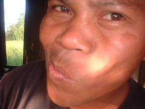

kibì 
/kibiʔ/
v_rt.
“twist_mouth”
1.
adj.
twisted mouth
Eng. twisted mouth
Online dict status: -
Usage level: R
2.
v.
for something (egkakibì, nakibì, theme, egkA><ø-) to be out of level
Ka seini ne lalag iyan sika se nehiwi warè nekegtupu wey warè neke-atag iling ke eg-anitan ke kun egkawingig ka be-bè ta. Iyan man-e igpasabut te kibì ka nahulibed se bebè. Masulug ka egpuunan mania te egkakibì ka bebè: sabeka kayi iyan sika se in-anitan. Sikan naa, kenè egkaayun ne egngisi te nabalbalangan ne etew, egngisi te miyew, asu wey duma pad ne ayam su egkakibì ka bebè. Sabeka man-e ne egpuunan te egkabibì ka bebè tenged su napusil wey ke natibbas naa.
Mani buwa te egkakibi ka lamisa ney?
Why is it that our table is out of level?
Eng. out of level; sloping; crooked
Online dict status: -
Usage level: M
3.
v.
for someone (egkakibì, nakibì, actor, egkA><ø-) to have a twisted mouth
Cult. A twisted mouth is caused by violating the anit taboo.
Egkakibi ka be-bè din ke egsinehew.
Her mouth is twisted when she cries.
Eng. twisted mouth
DDP: Mouth (2.1.1.4)
Online dict status: -
Usage level: R
Updated by: RJH,QDL,RJH
Last updated: 22/Nov/2016
This page last updated: 03-Jan-2020
Copyright © 2009-2014, Matigsalug Language Christian Association, Inc